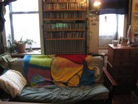

Rock 'n Rollers Don't Bathe
picture:

Houston & Delancey (MMM show poem 2/16/12 @ Sidewalk Cafe, NYC)
I was walking home last night and a delivery guy stopped me and asked if I knew were Houston and Delancey was. I looked at him kind of weird. I’m sorry my friend but that’s impossible, I said. Anyone who has lived in the city long enough knows that these 2 streets run parallel to each other. He showed me a receipt and it was printed right there: Houston and Delancey. What a mean trick someone must have played on this guy. It seemed like he couldn't speak much English. I had to just walk away saying, "Sorry, I can't help you." I thought a little bit more about it. I flashed my high school geometry class lesson about 2 parallel lines that never intersect. I imagined this poor guy riding his bike down a Houstan street that stretched around the globe, for the rest of his life, forever searching for it’s never intersecting Delancey street. I started to think of how different the things used to be on either sides of these two streets throughout history, separated by a mere 3 blocks. And how each coming year the lines that they used to represent, like many neighborhoods around the world, are being blurred and redrawn.
My friend Nick recently posted a face book comment that said that after being asked 4 times in one day for directions and feeling he had adequately responded he had finally felt like a “real” New Yorker. This brings me back to one of my first visits to NYC. Through an odd chain of events I ended up dropping acid with a girl I hardly knew and amongst other things getting totally lost in Macy's for about 2 hours on a Sunday afternoon. At the end of the day I recall bringing back one solid bit of information with me from my trip. I just remember repeating it over and over to myself like a mantra to keep from freaking out as we ogled the melting glass display cases of jewelry and cosmetics:
“Power in New York City is knowing where you’re going.
Power in New York City is knowing where you’re going.”
The streets were more hostile back then. If you looked like you didn’t know where you were going chances are, sooner or later, someone was going to stop you and ask for change or try to fuck with you somehow. At least that’s how I felt back then. I don’t feel so much like that anymore.
I don’t really know at what point all the seemingly same looking streets and street corners started taking on their particular characteristics. Or how I learned, when exiting the subway, to immediately sense which way was uptown and which way was downtown without having to look at a street sign anymore? But it happened. I watched those landmarks come and go. The biggest I suppose being the World Trade Center which was my beacon home as traveled downtown back to my neighborhood. But I learned hot to not need that as welll.
In about a month, after 18 years of living here, I'll be moving out of the city. And it just so happens that for the past 15 years I've lived on a street that intersects Houstan and Delancey. I started to make a list of all of the things that I will miss about NYC and I have to admit after about 5 things on my list I realized that most of the things that I miss about NY are already gone. I know that sounds kind of harsh and cynical and bitter but I don’t really feel that way, because I think that’s part of the point of New York. And maybe this is it’s biggest lesson. What I love about NYC the most is that it’s never really what I think it is. It’s hard to get too attached or sentimental about anything in New York because things are always changing and moving. And if you live hear long enough you actually learn how to occasionally get bored with that. It’s the weirdest thing.
If you wanna act like a New Yorker after living here for just one week you can. If you wanna write a song about it or a poem go right ahead. You are standing on the shoulders of giants that are standing on the shoulders of giants. And before you know it you’re up there with the skyscrapers, at the top of the empire state building. And pretty soon you learn that there’s really nothing up there but tourists. Real life happens at street level. This has always been my favorite part of New York City. I guess it's why I prefer that parts of town where the buildings are slightly shorter. I’m sure I know more about this city than some people who have lived here their whole lives and in turn someone can come here for a couple of hours and discover something special that I will never ever see. That’s New York. So, sure, after 18 years of living here I still grapple with the idea of calling myself a “real” New Yorker. But What I do know is that where ever I go, to some degree I’ll probably always feel like, that delivery guy, that I’m living somewhere, lovingly, between those parallel lines of Houston and Delancey looking for my place where they intersect.
- MMM's blog
- Login or register to post comments